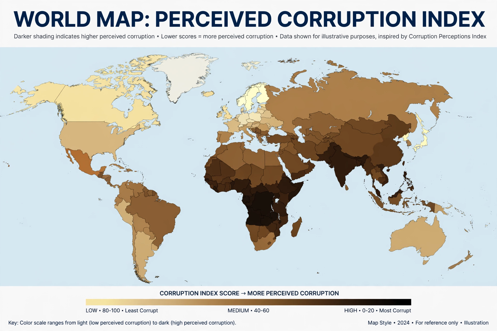

Corruption Perceptions Index

The Corruption Perceptions Index (CPI) is an annual index published by Transparency International since 1995 that ranks countries and territories by their perceived levels of public sector corruption, as assessed by experts and businesspeople. It is one of the most widely cited measures of corruption worldwide and is used by governments, investors, journalists and researchers.
Methodology
The CPI is a composite index drawing on multiple independent data sources — surveys of business executives and assessments by country analysts and risk agencies. Since 2012, scores have been expressed on a scale from 0 (highly corrupt) to 100 (very clean), replacing the earlier 0–10 scale. Recent editions have covered around 180 countries and territories. A country must appear in a minimum number of sources to be included.
Transparency International emphasises that the index measures perceptions of corruption rather than corruption itself, since corrupt transactions are by nature hidden and difficult to measure directly.
Results
Nordic countries — Denmark in particular — together with countries such as Finland, New Zealand, Singapore, Switzerland and Norway have consistently occupied the top positions, while states affected by conflict or weak institutions, including Somalia, Syria, South Sudan, Venezuela and Afghanistan, have typically ranked at the bottom. Most countries score below 50, which Transparency International describes as indicating a serious corruption problem in the majority of the world.
Criticism
The CPI has been criticised on several grounds: that perceptions may lag or diverge from experienced corruption; that expert and business respondents may not represent the general population; that the index captures public sector corruption while under-weighting private-sector and transnational corruption, such as the role of financial centres in laundering illicit funds; and that year-to-year changes can reflect media coverage rather than real change. Transparency International has adjusted its methodology over time and publishes confidence intervals with scores, while noting that the index is intended as a comparative snapshot and advocacy tool rather than a precise measurement.
Use and influence
Despite the criticisms, the CPI is influential: movements in a country's score or rank receive substantial press attention, and the index is used in academic research, aid and investment decisions, and anti-corruption campaigning. Transparency International also publishes complementary products, including the Global Corruption Barometer, which surveys citizens' direct experiences of bribery.